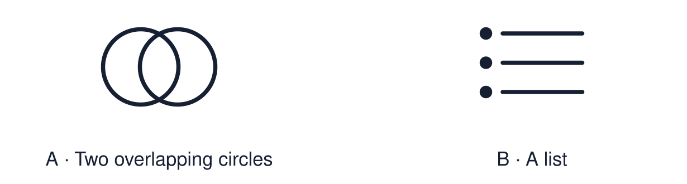

Arrival choices
Previous lesson reminder:

Start with 1 and 2. Try 3 and 4 when ready. Reading and exact scribing are available.
1 Name one belief connected to Christmas.
Support: Use the reminder strip or talk it through with an adult.
2 Which meaning fits compare?
Support: Choose: To look for what is the same and what is different OR A way that two things are the same.
3 Give one similarity between two festivals of light.
Support: Use the model evidence anchor A, B or read one relevant card together.
4 Do we compare festivals to decide which is best?
Support: Give a reason when ready.
Stretch: use a precise example or explain which detail supports your answer.
Evidence cards
Read, point or listen. Keep the source label with any detail you use.
A Diwali
Many Hindus, Sikhs and Jains. Diyas and rangoli. For many Hindus the light recalls Rama and Sita and good overcoming evil.
Source: Authored summary; see Hindu American Foundation, Diwali
Limit: Belief and practice vary between individuals and communities.
B Hanukkah
Jewish. Eight nights. The menorah recalls the rededication of the Temple and the oil that lasted.
Source: Authored summary; see Chabad, What is Hanukkah
Limit: Belief and practice vary between individuals and communities.
C Christmas
Christian. Advent candles and carol services. Many Christians call Jesus the light of the world.
Source: Authored RE summary
Limit: Belief and practice vary between individuals and communities.
D Comparing respectfully
Use “both” for a similarity and “however” for a difference. We compare to understand, never to rank.
Source: Authored classroom rules
Limit: Three festivals are a small sample of many.
Shared investigation
1. Sort each statement: similarity or difference.
2. Say it aloud using “both” or “however”.
Work with a partner or adult, or use your own table. One person suggests; the other checks the evidence. Swap after one turn. Passing is allowed.
Move or match the cards
| Cards to use |
|---|
| Families and communities gather |
| The story behind the light |
| Light is used as a symbol |
Possible labels: Difference / Similarity
Support: Read one evidence card together. Highlight a useful detail. Rehearse with: Both ___ and ___ ___. However, ___.
Further challenge: Explain why using “however” is more respectful than saying one festival is better.
Supported independent task
Complete this route only. Compare two festivals of light respectfully using one similarity and one difference.
1. Choose two festival picture cards.
2. Point to one thing that is the same.
3. Say or finish: Both ___.
Support: Read one evidence card together. Highlight a useful detail. Rehearse with: Both ___ and ___ ___. However, ___. Complete the organiser one space at a time. Both ___ and ___ ___. However, ___.
An adult may read or scribe your exact response. They should not choose the answer.
Standard independent task
Complete this route only. Compare two festivals of light respectfully using one similarity and one difference.
1. Choose two festivals.
2. Write one similarity using “both”.
3. Write one difference using “however”.
Support: Both ___ and ___ ___. However, ___.
Check the required evidence and revise one detail.
Stretch independent task
Complete this route only. Compare two festivals of light respectfully using one similarity and one difference.
1. Compare two festivals with a similarity and a difference.
2. Support each with a detail from the cards.
3. Add the third festival to your similarity.
Support: Choose the evidence independently. Use the frame only if it helps.
Explain why using “however” is more respectful than saying one festival is better.
Exit ticket
Choose a response mode. You may give your answers privately to an adult.
Give one similarity between two festivals of light.
Do we compare festivals to decide which is best?
Support: Both ___ and ___ ___. However, ___.
Further challenge: Explain why using “however” is more respectful than saying one festival is better.